十一、色谱法 答案
一、选择题 ( 共197题 )
1. 2 分 (1028) (4) 2. 2 分 (1029) (4) 3. 2 分 (1030) (2)
4. 2 分 (1031) (4) 5. 2 分 (1032) (3) 6. 2 分 (1033) (4)
7. 2 分 (1034) (2) 8. 2 分 (1035) (2) 9. 2 分 (1036) (1)
10. 2 分 (1037) (2) 11. 2 分 (1038) (1) 12. 2 分 (1039) (3)
13. 2 分 (1040) (1) 14. 2 分 (1041) (2) 15. 2 分 (1042) (2)
16. 2 分 (1043) (3) 17. 2 分 (1044) (1) 18. 2 分 (1045) (3)
19. 2 分 (1046) (2) 20. 2 分 (1047) (2) 21. 2 分 (1048) (3)
22. 2 分 (1049) (1) 23. 2 分 (1050) (2) 24. 2 分 (1051) (3)
25. 2 分 (1052) (3) 26. 2 分 (1053) (2) 27. 2 分 (1054) (3)
28. 1 分 (1055) (3) 29. 2 分 (1057) (1) 30. 1 分 (1058) (3)
31. 2 分 (1059) (1) 32. 2 分 (1060) (2) 33. 2 分 (1061) (3)
34. 2 分 (1062) (2) 35. 2 分 (1063) (2) 36. 2 分 (1064) (1)
37. 2 分 (1065) (4) 38. 2 分 (1066) (1) 39. 5 分 (1067) (1)
40. 2 分 (1108) (3) 41. 2 分 (1109) (3) 42. 2 分 (1110) (4)
43. 2 分 (1177) (1) 44. 2 分 (1185) (2) 45. 2 分 (1207) (1)
46. 2 分 (1211) (2) 47. 2 分 (1212) (2) 48. 2 分 (1213) (3)
49. 2 分 (1214) (2) 50. 2 分 (1215) (3) 51. 2 分 (1390) (3)
52. 2 分 (1391) (2) 53. 2 分 (1392) (4) 54. 2 分 (1393) (2)
55. 1 分 (1394) (4) 56. 1 分 (1395) (4) 57. 2 分 (1396) (3)
58. 2 分 (1397) (4) 59. 2 分 (1398) (3) 60. 2 分 (1399) (3)
61. 2 分 (1400) (3) 62. 2 分 (1401) (1) 63. 2 分 (1402) (4)
64. 2 分 (1403) (4) 65. 2 分 (1404) (3) 66. 2 分 (1405) (2)
67. 2 分 (1406) (3) 68. 2 分 (1407) (2) 69. 1 分 (1408) (4)
70. 2 分 (1409) (1) 71. 2 分 (1410) (4) 72. 2 分 (1411) (3)
73. 2 分 (1412) (4) 74. 2 分 (1413) (2) 75. 2 分 (1414) (3)
76. 2 分 (1415) (4) 77. 2 分 (1416) (3) 78. 2 分 (1417) (4)
79. 2 分 (1418) (3) 80. 2 分 (1419) (2) 81. 2 分 (1420) (4)
82. 2 分 (1421) (1) 83. 2 分 (1422) (4) 84. 2 分 (1423) (4)
85. 2 分 (1424) (4) 86. 2 分 (1425) (2) 87. 2 分 (1426) (3)
88. 2 分 (1427) (4) 89. 2 分 (1428) (4) 90. 2 分 (1429) (4)
91. 2 分 (1430) (4) 92. 2 分 (1431) (1) 93. 2 分 (1432) (2)
94. 1 分 (1433) (2) 95. 2 分 (1434) (3) 96. 2 分 (1435) (1)
97. 2 分 (1436) (1) 98. 2 分 (1437) (1) 99. 1 分 (1438) (1)
100. 1 分 (1439) (1)
101. 1 分 (1440) (2) 102. 2 分 (1441) (1) 103. 2 分 (1442) (3)
104. 2 分 (1445) (4) 105. 2 分 (1446) (1) 106. 2 分 (1447) (2)
107. 2 分 (1448) (4) 108. 2 分 (1449) (4) 109. 2 分 (1450) (4)
110. 2 分 (1451) (3) 111. 2 分 (1452) (4) 112. 2 分 (1453) (4)
113. 2 分 (1454) (4) 114. 2 分 (1455) (4) 115. 2 分 (1456) (4)
116. 2 分 (1457) (4) 117. 2 分 (1458) (4) 118. 2 分 (1459) (1)
119. 2 分 (1460) (4) 120. 2 分 (1461) (1) 121. 2 分 (1462) (4)
122. 2 分 (1463) (4) 123. 2 分 (1464) (2) 124. 2 分 (1465) (3)
125. 2 分 (1466) (1) 126. 2 分 (1467) (2) 127. 2 分 (1468) (3)
128. 2 分 (1469) (1) 129. 2 分 (1470) (1) 130. 2 分 (1471) (3)
131. 2 分 (1472) (4) 132. 2 分 (1473) (1) 133. 2 分 (1474) (3)
134. 2 分 (1475) (2) 135. 2 分 (1476) (1) 136. 2 分 (1477) (1)
137. 2 分 (1478) (4) 138. 2 分 (1479) (1) 139. 2 分 (1480) (1)
140. 2 分 (1481) (2) 141. 2 分 (1482) (2) 142. 2 分 (1483) (3)
143. 2 分 (1484) (2) 144. 2 分 (1485) (4) 145. 2 分 (1486) (4)
146. 2 分 (1488) (3) 147. 2 分 (1491) (2) 148. 2 分 (1630) (3)
149. 2 分 (1631) (2) 150. 2 分 (1632) (4) 151. 2 分 (1633) (2)
152. 2 分 (1634) (3) 153. 2 分 (1635) (1) 154. 2 分 (1636) (2)
155. 2 分 (1637) (2) 156. 2 分 (1638) (4) 157. 2 分 (1639) (3)
158. 2 分 (1640) (2) 159. 2 分 (1641) (3) 160. 2 分 (1642) (3)
161. 2 分 (1643) (4) 162. 2 分 (1644) (1) 163. 2 分 (1645) (4)
164. 2 分 (1646) (4) 165. 2 分 (1647) (2) 166. 2 分 (1648) (3)
167. 2 分 (1649) (2) 168. 2 分 (1711) (2) 169. 2 分 (1877) (1)
170. 2 分 (1878) (1) 171. 1 分 (1879) (4) 172. 1 分 (1880) (3)
173. 1 分 (1881) (1) 174. 1 分 (1882) (2) 175. 1 分 (1883) (1)
176. 1 分 (1884) (4) 177. 1 分 (1885) (3) 178. 1 分 (1886) (2)
179. 1 分 (1887) (1) 180. 1 分 (1888) (4) 181. 1 分 (1889) (2)
182. 1 分 (1890) (3) 183. 1 分 (1891) (4) 184. 1 分 (1892) (1)
185. 1 分 (1893) (2) 186. 1 分 (1894) (3) 187. 1 分 (1895) (3)
188. 1 分 (1896) (1) 189. 1 分 (1897) (2) 190. 2 分 (1898) (1)
191. 2 分 (1899) (2) 192. 1 分 (1900) (4) 193. 1 分 (1901) (3)
194. 1 分 (1902) (2) 195. 1 分 (1903) (3) 196. 2 分 (1904) (1)
197. 1 分 (1905) (1)
二、填空题 ( 共 105题 )
1. 2 分 (1443)
[答] 色散力
2. 2 分 (1444)
[答] 静电力
3. 2 分 (1490)
[答] (1)
4. 2 分 (2029)
[答] 静电力(定向力,库仑力)；诱导力；色散力；氢键作用力。
5. 2 分 (2045)
[答] (1) 按组分沸点顺序分离，沸点低的组分先流出；
(2) 按组分极性大小分离，极性小先流出。
6. 2 分 (2068)
[答] 等于。
7. 2 分 (2071)
[答] 热导池
8. 2 分 (2078)
[答] 测定结果
9. 2 分 (2079)
[答] 柱的效能
10. 2 分 (2092)
[答] 氢气
11. 2 分 (2097)
[答] 越大
12. 2 分 (2098)
[答] 越高
13. 2 分 (2099)
[答] 理论塔板数
14. 2 分 (2100)
[答] 相对分子质量小的气体
15. 2 分 (2110)
[答] wi=Aifi’/(A1f1’+A2f2’+.....Anfn’)
16. 2 分 (2357)
[答] 超临界流体色谱法
17. 2 分 (2358)
[答] 化学键合
18. 2 分 (2359)
[答] 示差折光检测器
19. 2 分 (2360)
[答] 柱效能
20. 2 分 (2361)
[答] 脱气
21. 2 分 (2362)
[答] 水
22. 2 分 (2363)
[答] 硅胶
23. 2 分 (2364)
[答] 纸色谱和薄层色谱
24. 2 分 (2365)
[答] 选择性(a)
25. 2 分 (2366)
[答] 柱外
26. 2 分 (2367)
[答] 固定相和流动相
27. 2 分 (2368)
[答] 俄; 茨维特( Tswett ); 液-固
28. 2 分 (2369)
[答] 马丁和辛格
29. 5 分 (2370)
[答] 色谱速率； H＝A＋B／u＋Cu
30. 2 分 (2371)
[答] 吸附色谱；分配色谱；排阻色谱；离子交换色谱
31. 2 分 (2372)
[答] 纸色谱；薄层色谱
32. 2 分 (2373)
[答] H2； N2； He
33. 2 分 (2374)
[答] 气相色谱；气-液色谱；气-固色谱；液-相色谱；液-液色谱；液-固色谱
34. 2 分 (2375)
[答] 气路系统；进样气化系统；分离系统；记录显示系统；控温系统
35. 2 分 (2376)
[答] 使试样瞬间气化
36. 2 分 (2377)
[答] 试样瞬间气化而不分解；试样沸点
37. 2 分 (2378)
[答] 色谱柱；填充柱；空心毛细管柱(开管柱)
38. 2 分 (2379)
[答] 多孔性；化学惰性；热稳定性好；机械强度
39. 2 分 (2380)
[答] 减小填料的粒度
40. 2 分 (2381)
[答] 固体固定相(吸附剂)；液体固定相（固定液）
41. 2 分 (2382)
[答] 被测组分浓度（或质量）；易于测量的电信号
42. 2 分 (2383)
[答] 热容量较大；死体积较小；无催化效应
43. 2 分 (2384)
[答] 把残存的溶剂；低沸点杂质等赶走
44. 2 分 (2385)
[答] 酸洗；碱洗；硅烷化
45. 2 分 (2386)
[答] 试样的处理；分离；定性；定量
46. 2 分 (2387)
[答] 氢火焰离子化检测器
47. 2 分 (2388)
[答] 1.065×峰高×半峰宽
48. 2 分 (2389)
[答] 归一化
49. 2 分 (2390)
[答] 相对质量
50. 2 分 (2391)
[答] 峰高×保留时间(或保留距离)
51. 2 分 (2392)
[答] 火焰光度检测器
52. 2 分 (2393)
[答] 热导池检测器
53. 2 分 (2394)
[答] 电子捕获检测器
54. 5 分 (2395)
[答] 氢火焰离子化检测器和火焰光度检测器
55. 2 分 (2396)
[答] 正庚烷
56. 2 分 (2397)
[答] 苯
57. 2 分 (2398)
[答] A＋2（BC）1/2
58. 2 分 (2399)
[答] （B／C）1/2
59. 2 分 (2400)
[答] 离子交换(或离子)
60. 5 分 (2401)
[答] 选择性；总分离效能
61. 2 分 (2427)
[答] 气化室温度太高
62. 2 分 (2428)
[答] 加入已知物增高峰高的办法
63. 4 分 (2429)
[答] (B／C)1/2；H + 2(B／C)1/2
64. 2 分 (2508)
[答] 离子型 可离解
65. 2 分 (2509)
[答] 大； 大 ；长
66. 2 分 (2510)
[答] 涡流扩散； 分子扩散； 传质阻力
67. 2 分 (2520)
[答] lgt'R(x)-lgt'R(n)
100(n+ ─────────)
lgt'R(n+1)-lgt'R(n)
68. 2 分 (2809)
非极性烷基键合硅胶； 水及水溶性有机溶剂。
69. 2 分 (2810)
极性大； 极性小。
70. 2 分 (2811)
非极性； 极性。
71. 2 分 (2812)
极性小； 极性大。
72. 2 分 (2813)
极性； 非极性（或弱极性）。
73. 5 分 (2814)
经分离后的组分在电解池的电极表面所产生的氧化－还原反应所产生的电流与待测组 分的浓度成比例关系。
74. 2 分 (2815)
选择性； n→π*；π→π*。
75. 2 分 (2816)
π→π*； n→π*； 电荷转移；配位体场。
76. 2 分 (2817)
超临界流体；介于气体和液体之间。
77. 2 分 (2818)
相对分子质量大小不同；空间构型不同。
78. 2 分 (2819)
试样中所有组分都要在一定时间内分离流出色谱柱，且在检测器中产生信号。
79. 2 分 (2820)
低沸点的有机化合物；高沸点的有机化合物。
80. 2 分 (2821)
同族； lgVR’=a1Tb+b1。
81. 2 分 (2822)
同系物； lgVR’=an+b。
82. 2 分 (2823)
低碳数的有机化合物；高碳数的有机化合物。
83. 2 分 (2824)
色谱柱温度（柱温）；固定相性质。
84. 1 分 (2825)
100； 0 。
85. 2 分 (2826)
永久性气体；低沸点烃类。
86. 2 分 (2827)
硅藻土；非硅藻土。
87. 2 分 (2828)
相似相溶；
结构相似，极性相似的分子，其分子间作用力强，选择性高。
88. 2 分 (2829)
炭质吸附剂（活性炭、石墨化炭黑和炭分子筛等）；
氧化铝； 硅胶；分子筛；高分子多孔微球。
89. 2 分 (2830)
氢键型；形成氢键能力大小；不易形成氢键；容易形成氢键。
90. 2 分 (2831)
强极性；定向力。
91. 2 分 (2832)
极性；极性的大小；极性小；极性大。
92. 2 分 (2833)
中等极性；色散力；诱导力。
93. 2 分 (2834)
非极性；沸点的高低；沸点低；沸点高。
94. 2 分 (2835)
非极性；色散力。
95. 1 分 (2836)
热导池检测器；氢火焰离子化检测器；氮磷检测器；电子捕获检测器；火焰光度检测器。
96. 5 分 (2837)
惠斯顿电桥的桥路电流；
载气的种类（不同种类的载气具有不同的导热系数）；
热敏元件的电阻值及电阻的温度系数；
池体的温度。
97. 1 分 (2838)
空气。
98. 1 分 (2839)
甲烷。
99. 2 分 (2840)
颗粒细且大小均匀的固定相；均匀填充。
100. 5 分 (2841)
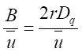
101. 2 分 (2842)
低；液膜。
102. 2 分 (4504)
[答] 只有载气流过的两根热丝; 有载气和组分流过的两根热丝.
103. 2 分 (4505)
[答] 内标物浓度应与被测组分浓度尽量接近.
104. 2 分 (4506)
[答] 粒度变得不均匀, 未涂布固定液的载体表面暴露, 使柱效降低.
105. 2 分 (4507)
[答] 衰减; 衰减，灵敏度.
三、计算题 ( 共 65 题 )
1. 5 分 (3105)
[答] H1 = 1000/800 = 1.25 mm , H2 = 1000/1000 = 1.0 mm
由于 H = B/u + C・u
1.25 = B/40 + 40C C = 0.0267
1.00 = B/10 + 10C B = 7.33
则u最佳 = (B/C)1/2 = (7.33/0.0267)1/2 = 16.57 mm/s
H最小 = B/u最佳 + C・u最佳 = 7.33/16.57 + 0.0267×16.57 = 0.884 mm
H最大 = 1000/0.884 = 1131
2. 5 分 (3106)
[答] H = A + B/u + Cu
dH B
─── = - ─── + C
du u2
dH B 0.32
当 ── = 0 时 , u最佳 = (──) 1/2 = (─── ) 1/2 = 8.4 cm/s
du C 0.0045
H最小�� = 0.011 + 0.32/8.4 + 0.0045×8.4 = 0.087 cm
3. 5 分 (3107)
[答] 进入检测器的质量 mi等于单位时间 (s) 载气中的质量 (g) 在全部时间下的积分
hu2 dx 60u2 60u2A
mi = 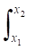 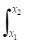
St u1 u1St u1St
得 St = 60 u2 A / mi u1
单位： mV・s/g
4. 5 分 (3108)
[答] fi’・Ai・ms 0.93×26.88×0.360
据 Wi= ───────── = ────────── = 0.20
fs’・As・mi 1.00×25.00×1.80
5. 10 分 (3109)
[答] 可以用内标法公式求出 A 的质量分数。具体解法关键是求 f'A 和 f'B
根据定义：
mA mB
fA = ─── fB = ───
AA AB
fA mA AB 1.5
f 'A= ─── = ─── ・── = ─── = 1.2
fB AA mB 1.25
fB
f 'B= ─── = 1.0
fB
mA AA f 'A mB 0.82 1.2 1
W(A) = ─── = ─────── = ─── × ── ×── = 0.24
ms AB f 'B ms 1.0 1.0 4.10
6. 10 分 (3110)
[答] tR,’B 5 - 1
(1) ──── = ──── = 4
tR,’A 2 - 1
B 停留在固定相中的时间为 A 的 4 倍。
KB tR,’B
(2) ── = ──── = 4
KA tR,’A
B 的分配系数是 A 的 4 倍。
t R’ 4tR’
(3) n = 16 ( ─── )2 , Wb= ────
Wb n1/2
同理 4×2tR ’
Wb’ = ─────
(2n)1/2
Wb’ 2
─── = ── = 1.4
Wb 21/2
即峰宽增加了 0.41 倍。
7. 10 分 (3111)
[答] 第一种解法
t0 = 1 min , tR,1 = 14 min , tR,1’ = 13 min
tR,2 = 17 min , tR,2’ = 16 min
Wb,2 = 1 min
tR,2
则 n2 = 16(───) = 4624
Wb2
tR,2’ 16
a2,1 = ──── = ── = 1.231
tR,1’ 13
tR,’2
k2’= ───── = 16
t0
(n2)1/2 a2,1 - 1 k2’
Rs ,2 = ───── ・ ────── ・───── = 3
4 a2,1 1 + k2’
Rs ,1 (n1)1/2 (L1)1/2
─── = ────── = ──────
Rs,2 (n2)1/2 (L2)1/2
L1 = [(L2)1/2(Rs,1/Rs,2)]2 = 0.75 m
第二种解法
相邻两个峰tR值相近，则设两峰的峰底宽 Wb可近似地看作相等。
tR,1- tR,2 17-14
Rs,1= ────────── = ───── = 3
1/2[Wb1+ Wb2] 1/2(2)
Rs,.1 (L1)1/2
─── = ─────
Rs,2 (L2)1/2
3 (3)1/2
─── = ─────
1.5 (L1)1/2
L1 = 0.75 m
8. 10 分 (3112)
[答] 1) tR’,1 = 14 - 1 = 13 min ; tR’,2 = 17 - 1 = 16 min
2) s = Wb/4 = 1/4 min = 0.25 min
3) n有效 = 16(tR’,2/Wb)2 = 16×162 = 4096
4) a2,1 = tR’,2/ tR’,1 = 16/13 = 1.23
n有效’ = 16×1.52(1.23/1.23-1)2 = 1030
n’ 1030
L’ = ──・L = ───× 3.00 = 0.75 m
n 4096
该用 0.8 m 以上的色谱柱。
9. 10 分 (3113)
[答] 3 (1.44/1.03)2-1 273+122
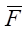
2 (1.44/1.03)3-1 273+25
(1) VR’(苯) = (1.41-0.24)×43.6 = 51.0 mL
VR’(甲苯) = (2.67-0.24)×43.6 = 106 mL
VR’(乙苯) = (4.18-0.24)×43.6 = 172 mL
VR’(异丙苯) = (5.34-0.24)×43.6 = 222 mL
(2) K (苯) = 51.0/14.1 = 3.62
K (甲苯) = 106/14.1 = 7.52
K (乙苯) = 172/14.1 = 12.4
K (异丙苯) = 222/14.1 = 15.7
(3) a(甲苯,苯) = 106/51.0 = 2.08
a(乙苯,甲苯) = 172/106 = 1.62
a(异,乙) = 222/172 = 1.29
(4) n有效 = 16×(1.5)2×(1.29/0.29)2 = 712
10. 5 分 (3114)
[答] n = 16(tR/Wb)2
WA = (16/n)1/2・dA = (16/2500)1/2・dA = 4/25×25 = 2.0 mm
WB = (16/n)1/2・dB = 4/50×36 = 2.88 mm
11. 10 分 (3115)
[答] (1). k= (tR-t0)/t0 k= (5.0-1.0)/1.0 = 4.0
(2). V0 = t0・F V0 = 1.0×50 = 50 mL
(3). K = k'・b 而 b = Vm/Vs = (t0・F)/Vs = (1×50)/25 = 25
K = k'・b = 4.0×25 = 100
(4). VR = tRF , VR = 50×50 = 250 mL
12. 10 分 (3116)
[答](1) tR’
�� 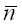
Wb
10.7-2.5
n有效(A) = 16×( ───── )2 = 637
1.3
11.6-2.5
n有效(B) = 16×( ───── )2 = 676
�� 1.4
= 1/2 (637+676) = 656
(2) tR,2- tR,1 11.6 - 10.7
R = ────────── = ─────── = 0.67
(Wb,1+ Wb,2)/2 (1.3+1.4)/2
aB，A 9.1
n有效B，A= 16R2( ───── )2 , aB，A= ───
��aB，A- 1 8.2
2 9.1/8.2
= 16×(──)2×(──────)2 = 727
3 9.1/8.2-1
n必须 = n有效×(1.5/R)2 = 727×[1.5/(2/3)]2 = 3678
L必须 = n必须×H = 3678×(40/727) = 202 cm ≈ 2 m
13. 10 分 (3117)
[答]
A1m4S4’ 42.2×0.1050×1.00
m1= ───── = ────────── = 0.0481 g
A4S1’ 121×0.762
0.0481
W1 = ───── =0.032
1.500
同理：
A2m4S4’ 36.4×0.1050×1.00
m2= ───── = ─────────── = 0.0578 g
A4S2’ 121×0.547
0.0578
W2 = ───── = 0.0385
1.500
A3m4S4’ 98.0×0.1050×1.00
m3= ───── = ─────────── = 0.0926 g
A4S3’ 121×0.918
0.0926
W3= ────── = 0.0618
1.500
14. 10 分 (3118)
[答] tR'A 198
(1) n有效��= 5.54 (────)2 = 5.54×( ───────── )2 = 2681
W1/2,A (1.5×3600)/600
H有效�� = L/n = (1.8×103)/(2681) = 0.67 mm
��aA,B= tR'A/tR'B = 198/182 = 1.08
(2) n有效’ = 16R2[a /(a -1)] = 16×1.52×(1.088/0.088)2 = 5503
L’= n有效’・H有效 = 5503×0.67 » 3.69 m
需延长 3.7-1.8 = 1.9 m
15. 10 分 (3123)
[答]VR’= F・( tR- t0) = 0.313×(5.1-3.1) = 0.72 mL
分配比 :
k = tR’/t0= (5.4-3.1)/3.1 = 0.74
Vm= t0・F = 3.1×0.313 = 0.97 mL
分配系数 :
K = k(Vm/Vs) = 0.74×(0.97/0.164) = 4.38
n有效��= 16(VR’/Wb)2= 16[(5.4-3.1)/0.4]2 = 529
16. 10 分 (3124)
[答]n = 16(tR/Wb)2 = 16(250/25)2 = 1600
kA= tR,'A/t0= (230-30)/30 = 6.7
kB= tR,'B/t0= (250-30)/30 = 7.3
��a = tR,'B/ tR,'A= 220/200 = 1.1
R = (tR,'B- tR,'A)/Wb = (220-200)/25 = 0.8
L = 2×(1.5/0.8)2 ≈ 7 m
17. 5 分 (3125)
[答] 乙 苯 对二甲苯 间二甲苯 邻二甲苯
fi ’Ai 116.4 75 134.4 102.5
∑fi ’Ai 428.7
质量分数 0.25 0.17 0.31 0.24
18. 5 分 (3339)
[答] u(最佳)＝ (B／C)1/2＝(0.16／0.04)1/2＝ 2.0 (cm／s)
H(最小)＝ A＋2(BC)1/2＝0.16＋ 2(0.16×0.04)1/2＝ 0.26 (cm)
19. 5 分 (3341)
[答] 解: Wb,1＝Wb,2 R＝（tR,2－tR,1）／Wb,2
＝（t'R,2－t'R,1）／Wb,2
即n2＝16（tR,2／Wb,2）2＝16R2（tR,2／（t' R,2－t'R,1））2
＝16R2（t'R,2／（t'R,2－t'R,1））（tR,2／t'R,2）
＝16R2（a／（a－1））2（（k2＋1）／k2）2
R＝[（n2）1/2／4]×[（a－1）／a]×[k2／（1＋k2）]
20. 5 分 (3342)
[答] 据 Wi ＝ (fi’Ai)／(∑fi＇Ai)
化合物 fi＇Ai 质量分数
乙 醇 5.00×0.64 0.18
庚 烷 9.00×0.70 0.35
苯 4.00×0.78 0.17
乙酸乙酯 7.00×0.79 0.31
∑fi＇Ai＝ 18.15
21. 5 分 (3343)
[答] 据 SC＝ (u1u2F A)／mi
已知: A＝1.90cm2, ρ＝0.88g／mL, V＝1.0μL
u1＝0.40×64mV／cm, u2＝1／2＝0.50min／cm
F＝F。(T1／T。)＝30.5×(273＋90)／(273＋20) mL／min
SC＝ (0.40×64×0.50×1.90×30.5×363)／(1×0.88×293)
＝1044 mV・mL／mg
22. 10 分 (3344)
[答] n＝6400 tR,A＝14×60＋40＝880 s
TR,B＝15×60＝900 s
R1＝2(tR,B－tR,A)／(Wb,A＋Wb,B)
＝2(tR,B－tR,A)／(4tR,A／n1/2＋4tR,B／n1/2)＝0.45
n2= n1(R2／R1)2＝6400(1.5／0.45)2＝71111
23. 5 分 (3345)
[答](1) 据 a 2,1＝(tR,2－t0)／(tR,1－t0)＝(26.0－1.5)／(16.5－1.5)
＝1.63
(2) 据 k'＝(tR,1－t0)／t0＝(16.5－1.5)／1.5＝10.0
(3) t'R,2＝26.0－1.5＝24.5 min
24. 5 分 (3346)
[答] 据 n＝16(tR／Wb)2＝16(7.2×10／8.0)2＝1296
H＝L／n＝1.0×1000／1296＝0.77 mm
��s＝(tR2／n)1/2＝tR／(n)1/2＝0.2
25. 5 分 (3347)
[答] 据I＝100[n＋(lgt' R,x－lgt'R,N)／(lgt'R,n+1－lgt'R,N)]
＝100[6＋(lg114.5－lg61.0)／(lg137.0－lg61.0)]＝677.8
26. 10 分 (3348)
[答]据 Wi＝(Ai fi’ ms)／(As fs’ m)
＝Aifi’×(ms／As fs’ m)
因为ms／(Asfs’ m)＝0.150／(98.0×1.02×1.500)＝0.001
即 W(乙苯)＝70.0×0.97×0.001＝0.068
W (对二甲苯)＝95.0×1.00×0.001＝0.095
W (间二甲苯)＝120×0.96×0.001＝0.012
W (邻二甲苯)＝80.0×0.98×0.001＝0.078
27. 5 分 (3349)
[答] 据 p＝p0×2[(pi／p0)3－1]／{3[(pi／p0)2－1]}
p＝1×2((5／1)3－1)／(3((5／1)2－1)＝2／3×124／24＝3.44×101325
＝3.5×105Pa
28. 10 分 (3350)
[答](1)A(乙)＝18.1×0.6＝10.9,A(丙)＝43.6×0.78＝34.0,A(丁)＝29.9×0.88
＝26.3
A(乙)＋A(丙)＋A(丁)＝10.9＋34.0＋26.3＝71.2
W(乙酸甲酯) ＝10.9／71.2=0.153
W(丙酸甲酯)＝34.0／71.2＝0.478
W(正丁酸甲酯)＝26.3／71.2＝0.369
(2)根据碳数规律,即lgtR＝an＋b,乙酸甲酯 3C,tR＝2.12min, lgtR＝0.326
丙酸甲酯4C,tR＝4.32min,lgtR＝0.635,丁酸甲酯5C,tR＝8.63min,lgtR＝0.936
根据丙酸甲酯和丁酸甲酯的数据:0.635＝a×4＋b, 0.936＝a×5＋b; a＝0.301,b＝-0.569
正己酸甲酯中有七个碳原子, 所以lgtR＝0.301×7－0.569, tR＝34.5min
29. 10 分 (3351)
[答] k'1＝(tR－t0)／t0＝(4.0－1.0)／1.0＝3.0
n／n(有效)＝[(1+k'1)／k'1]2＝[(1＋3)／3]2＝1.8
k'2＝(tR－t0)／t0＝(7.0－1.0)／1.0＝6.0
n／n(有效)＝[(1+k'2)／k'2]2＝[(1＋6)／6]2＝1.4
k'3＝(tR－T0)／t0＝(13－1.0)／1.0＝12
n／n(有效)＝[(1+k'3)／k'3]2＝[(1＋12)／12]2＝1.2
(1) 在不同条件下, 当分配比(k')不同时, n／n(有效)的比值也不同
(2) k'越大, n与n(有效)越接近, 即k'→∞时, n→n有效
30. 10 分 (3352)
[答]��a B,A＝KB／KA＝10.1／9.8＝1.03
k'B＝KB／b�啵�10.1／90＝0.112
nB＝16×R2（��a B，A ／（��a B，A －1）)2（（1＋kB）／kB)2
＝16×1.52（1.03／（1.03－1）)2（（1＋0.112）／0.112)2 ＝4.18×106
L＝nBH＝4.18×106×2×10-4＝836m
不能实现基线分离, 填充柱最长一般为6m.
31. 10 分 (3353)
[答]��αB.A＝kB／kA＝1.000／0.909＝1.10
n(有效)＝16×R2（a B.，A ／（a B.，A －1）)2
＝16×1.52（1.10／（1.10－1）)2＝4356
L＝n(有效)H＝4356×0.8＝3.48m
32. 10 分 (3354)
[答](1)不同流速时的塔板高度为: H1＝L／n1＝2000／2450＝0.816mm
H2＝L／n2＝2000／2200＝0.909mm
因为H＝B／u＋Cu 0.816＝B／15＋15C (1)
0.909＝B／40＋40C (2)
解方程式求得:B＝8.3 C＝0.0175
u(最佳)＝（B／C）1/2＝（8.3／0.0175）1/2＝（474）1/2＝21.8mL/min
(2)H＝B／u＋Cu＝8.3／21.8＋0.0175×21.8＝0.763mm
n＝L／H＝2000／0.763 » 2.6×103
33. 10 分 (3355)
[答] (1) u1=200/18.2 =11.0cm/s
u2=200/8 =25cm/s
u3=200/5 =40cm/s
2020 200
(2) n1 =16(───)2=1313, H1 = ─── =0.15cm
223 1313
888 200
n 2=16(───)2=1287, H2= ─── =0.16cm
99 1287
558 200
n 3=16(───)2=1079, H 3= ─── =0.19cm
68 1079
B
(3) 0.15=A+ ── + 11C
11
B 解得: A=0.61
0.16=A+ ── + 25C B=0.70
25 C=0.027
B
0.19=A+ ── + 40C
40
B 7.0
(4) u(最佳) =(──)1/2 =(────)1/2 =16.1cm/s
C 0.027
34. 5 分 (3356)
[答] W(甲酸)＝〔(14.8／0.261)／(133／1.00)〕×(0.1907／1.055)＝0.077
W(乙酸)＝〔(72.6／0.562)／(133／1.00)〕×(0.1907／1.055)＝0.176
W(丙酸)＝〔(42.4／0.938)／(133／1.00)〕×(0.1907／1.055)＝0.061
35. 10 分 (3357)
[答]Sm＝60×u1u2Ａ／W＝60×0.658×0.5×173／（0.011×10-3）
＝3.1×108mV・s/g
Dm＝2N／Sm＝2×0.1／3.1×108＝6.5×10-10 g/s
Q0＝1.065W1/2・Dm＝1.065×0.6×1／2×60×6.5×10-10＝1.2×10-8g
36. 10 分 (3358)
[答] W(空气)＝[(f 'iAi)／(f '1A1＋f '2A2＋・・・＋f 'NAN)]
(0.84×34×4)
＝────────────────────────────────────
(0.84×34＋0.74×214＋1.0×4.5＋1.0×278)×4＋1.05×77＋1.28×250＋1.3
＝0.49
甲烷为0.27 二氧化碳为0.0077 乙烯为0.47 乙烷为0.34
丙烯为0.14 丙烷为0.028
37. 10 分 (3359)
[答]mi＝hifi, ms＝ hsfs
mi hi fi hi mi／ms
─── ＝ ──× ── ＝k ── , k＝ ─────
ms hs fs hs hi／hs
k1＝ 0.0056／(0.0455×0.234) ＝ 0.526
k2＝ 0.0104／(0.046×0.424) ＝ 0.533
k3＝ 0.0134／(0.0407×0.608) ＝ 0.542
k4＝ 0.0207／(0.0433×0.838) ＝ 0.598 平均值 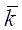
W(苯)＝(0.55×0.0421×0.341)／5.119＝1.5×10-3
38. 10 分 (3380)
[答] n 1+k ��n1/2 �� a-1 k
─── = (───)2, R= ────・───・───
n(有效) k 4 a�� 1+k
�覃覃� �覃覃�
n(有效) ��a-1 �� (1600)1/2 100/90 -1
R= ────・─── = ────・────── =1.0
4 a�� 4 100/90
39. 5 分 (3381)
[答] lg11.0 - lg10.0
IA= 100×[8+ ────────] =852.3
lg12.0 - lg10.0
A和B不是同系物, 它们保留指数之差不是100的整倍数.
[答] KA/KB =0.909, 则αB.A =KB/KA =1/0.909 =1.10
4×1.5×1.10
n(有效) =(────────)2=4356
1.10 -1
L =4356×0.8 »3.5m
40. 5 分 (3624)
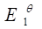
41. 5 分 (3625)
(1)根据碳数规律：
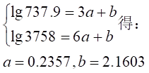
可能是正戊酸。
(2)
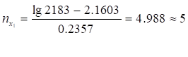
可能是正戊醇
(3) 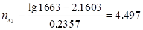
不可能是正构丁酸。
42. 10 分 (3626)
对于同系物，可用碳数规律判断：
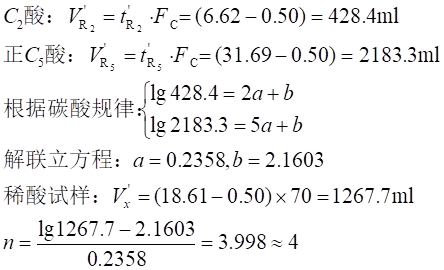
因此此组分可能是正构丁酸。
43. 10 分 (3627)
（1）柱后载气的平均体积流量（ 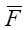
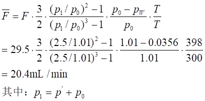
(2)经过压力、温度和水蒸气校正后的调整保留体积（VN）：
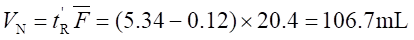
（3）比保留体积（Vg）：
Vg＝（VN/WS）×（273/TC）＝（106.7×273）/（0.957×398）＝76.5mL/g
44. 10 分 (3628)
（1）经过压力校正后的调整保留体积（VN）和比保留体积（Vg）：
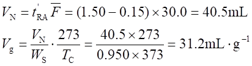
（2）
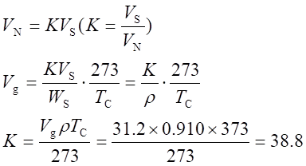
45. 5 分 (3629)
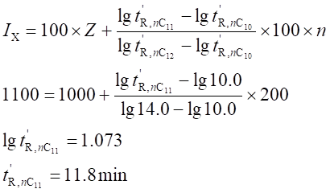
46. 5 分 (3630)
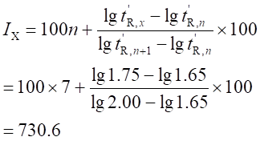
47. 5 分 (3631)
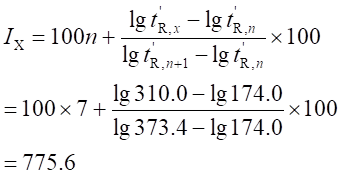
48. 5 分 (3632)
（1）灵敏度：
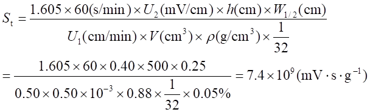
（2）检测限：
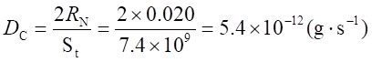
49. 10 分 (3633)
（1）
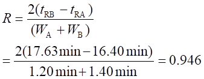
（2） 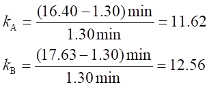
（3） 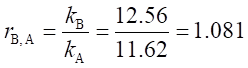
（4）
50. 10 分 (3634)
标准乙烯气的浓度：
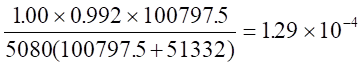
再次稀释后的乙烯浓度：
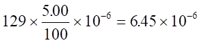
根据单点较正法，试样中乙烯浓度：
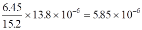
设最小检知浓度为x ，则
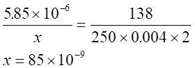
51. 10 分 (3635)
先求取相对较正因子：
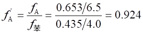
同理：
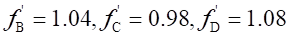
然后根据归一化公式求取质量分数
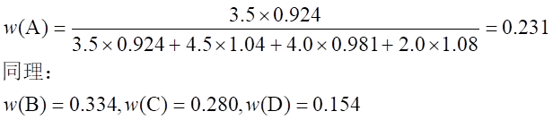
52. 10 分 (3636)
先求出间苯二甲酸二甲酯的量，再将它的量换算成相应的间苯二甲酸的量，然后再除以 试样量即可。切忌直接套用内标法公式。
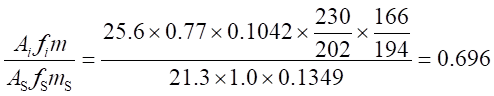
重氮甲烷化的目的是使羧酸类转变成甲酯类，从而减小极性，在色谱柱上分离易得到 对称的色谱峰。由于羧酸的极性强，易引起脱尾峰而降低分离度。
53. 5 分 (3637)
关键是将各组分生成的CO2所产生的峰面积均应换算成单位摩尔碳原子所产生的峰面积，然后进行归一化计算。
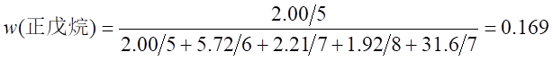
同理可求得 3－甲基己烷，0.136；三甲基戊烷，0.102；甲苯，0.191；正己烷，0.403
54. 10 分 (3638)
lgVg=an＋b ，而Vg∝VN∝T’R
因此，lgT’R =an+b’ ，列出联立方程求解
lg13.25＝6a＋b’
lg 32.75＝9a＋b’
则a＝0.1310 ， b’＝0.3362
分别将Cx、Cy、Cz的t’R代入，求解
lg45.00＝0.1310n＋0.3362
Cx,n＝10.0
同理求得Cy,n＝5，Cz,n＝8
因此它们为C10、C5、C8的饱和醛。
55. 5 分 (3639)
此题无现成公式可套，要从最小检知浓度的概念出发去求，只有深入理解了这一概念后 可很快求解。
设最小检知浓度为x, 则
1.00×10－6 /x = (200.0×3) /(2×1)
x=2×1.00×10－6 /(200.0×3)＝3.3×10－8 g/g
56. 10 分 (3640)
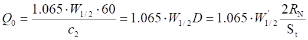
W1/2表示以时间为单位的半峰宽度。
根据最小检知浓度定义，可得：
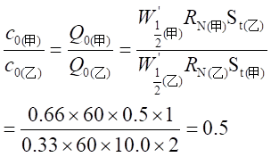
57. 10 分 (3641)
由计算或查表得到j＝0.643 ，则净保留体积为：
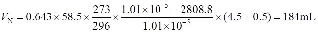
求得固定液体积为：
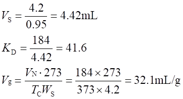
58. 5 分 (3642)
当其它条件不变时，柱长虽增加，但理论塔板高度可视作不变。
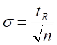
因此柱长增加一倍后，
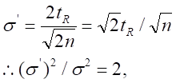
可见方差增加一倍。
59. 10 分 (3643)
根据KA/KB＝0.909，说明B后出峰。
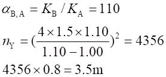
60. 10 分 (3644)
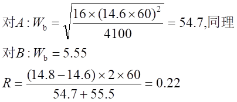
61. 10 分 (3645)
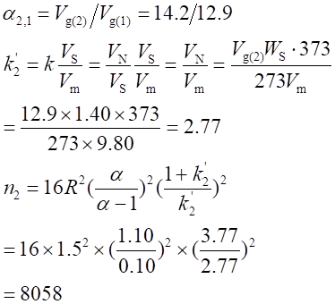
此塔板数对A组分而言。
62. 5 分 (3646)
根据塔板高度的定义：H＝σ2/L。σ为标准偏差，L 为柱长。但题中的σ以
时间为单位，故必须换算：
σt ・r=σ(σt表示以时间为单位)，r为组分移动速率
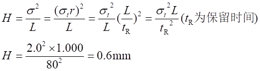
TR为保留时间。
63. 5 分 (3647)
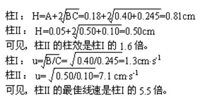
64. 2 分 (2506)
[答] 大于, H2 、He, He,H2
65. 2 分 (2507)
[答] 选择性,柱效,灵敏度
四、问答题 ( 共89 题 )
1. 10 分 (4059)
[答] 如图 解释如下：
a. 由于 dp变小，涡流扩散变小，A项变小。
b. 由于 dp变小，填充更紧密,VM 减小。流动相传质阻力变小,CM项变小。
c. 由于 dp变小，柱内压力增大,入口压不变，柱内线速度变小，B 项有所增
大。
d. 由于 dp变小，固定液含量不变， df变小，Cs项变小。
e. uOPt =(B/C) 1/2 因 B 项有所增大，且 CM Cs下降，故 uOPt 增大。
f. Hmin = A + 2(BC)1/2，因 A项变小，B项有所增大，CM Cs下降比较快结果
Hmin 下降。
综上所述得如图结果。
2. 5 分 (4060)
[答] 色谱流出曲线如下:
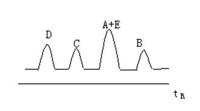
理由：K = cs/cM， K 大表示 cs大，而 t∝K
组分按K的大小次序流出。(2分)
3. 5 分 (4061)
[答]检查气相色谱仪漏气的简单快速方法是用手指头堵死气路的出口处, 观察转子流量计的浮子是否较快下降到其底部, 若不是, 则表示气路系统漏气.
4. 5 分 (4062)
[答] 由于热导池检测器的灵敏度 S 与桥路电流I3成正比，因此适当提高 I ，即能使S有很大提高。
5. 5 分 (4069)
[答] 流出顺序为：正己烷→环己烷→苯→甲苯。
因它们的沸点高低顺序为：
正己烷 ＜ 环己烷 » 苯 ＜ 甲苯
苯与环己烷沸点虽相近，苯与固定液邻苯二甲酸二壬酯的作用力比环己烷作用要强，因此环己烷先流出，苯后流出。
6. 5 分 (4070)
[答] 选用相对分子质量！小的气体，如：氢（氦），可以改善气相传质阻力。
7. 5 分 (4071)
[答] 由于组分在液-液两相的分配系数随温度的变化较小，因此液相色谱柱不需恒温。
8. 5 分 (4072)
[答] 由于组分在液相中的扩散系数比在气相中的扩散系数小4～5个数量级。因此，在液相色谱中，范氏方程中的分子扩散项对柱效能的影响很小，可以忽略不计。
9. 5 分 (4073)
[答] (1) 从抑制纵向扩散看，能增加柱效。
(2) 但单纯增加流速会增加传质阻力，从而增加塔板高H，使柱效下降。
(3) 正确做法应uopt下操作
10. 5 分 (4074)
[答]要兼顾到提高柱效和加快分析速度两个方面。提高载气流速可加快分析速度，抑制分子扩散 (B/u)，但将使传质阻力增加 ( CM + Cs) 为此，可采用降低固定液用量，减少液层厚度 df，同时应用轻质载气提高 DM来减少气相传质阻力等措施。因此，结论是：选用轻质载气，减少固定液用量，提高载气流速。
11. 5 分 (4075)
[答] 1. 谱峰变宽,柱外分子扩散加剧。
2. 谱峰变宽，柱外分子扩散加剧。
3. 峰形变窄，保留时间缩短。
4. 峰形变宽,增加0.4倍，保留时间增加。
12. 5 分 (4142)
[答] 不对，因为能否分离还要根据两组分在柱上的相对保留值差值大小来决定。
13. 5 分 (4317)
[答]气-固色谱法是流动相为气体, 固定相为固体吸附剂。分离原理是利用组分与固体吸剂的吸附与脱附能力不同进行分离。可适用于气体及低沸点烃类。
14. 5 分 (4318)
[答] 气-液色谱法是流动相为气体, 固定相为液体。分离原理是利用组分与固定液的溶解挥发能力不同进行分离。可适用于在固定液中有一定溶解度的试样。
15. 5 分 (4319)
[答] 保留值是由色谱过程的热力学因素决定的, 保留值可用于定性分析。
16. 2 分 (4321)
[答] 色谱流出曲线的宽度是由色谱过程的动力学因素决定的,
色谱流出曲线越窄, 则分离度越好, 表明塔板数越多, 分离效能越好。
17. 2 分 (4322)
[答] 试样中各组分在色谱柱中能获得分离或至少分离到半宽以下,分离后的各组分
均能获得相应的流出曲线。
18. 5 分 (4323)
[答] 蒸气压低, 热稳性好;
化学惰性, 不与组分发生化学反应;
有一定的溶解能力;
对被测组分有良好的分辨能力。
19. 5 分 (4324)
[答] 因为R＝（tR ,2－tR ,1）／（1／2）×（Wb, 2＋Wb, 1）
式中分子项: tR，2－tR ,1, 涉及色谱过程热力学因素;
式中分母项:（1／2）×（Wb, 2＋Wb, 1）, 涉及色谱过程动力学因素;
R将动力学因素和热力学因素结合在一起, 故称其为色谱柱总分离效能指标。
20. 5 分 (4325)
[答]不对, 因为不同的流动相粘度也不一样, 流动相的摩尔质量越大, 粘度也越大, 所以线速度是不同的。
21. 5 分 (4326)
[答] 不正确, 不能用柱出口线速, 必须用柱内平均流速计算分配比.
22. 5 分 (4327)
[答]类型有液-液分配色谱;利用组分的溶解度的不同。
液─固吸附色谱;利用组分的吸附 能力的不同。
离子交换色谱和空间排阻色谱.利用组分分子大小不同，而与离子交换剂结合力
的不同。
23. 5 分 (4328)
[答] (1) 峰宽减小，因为分配系数减小。
(2) 峰宽增加，传质阻力增加。
(3) 峰宽增加，传质阻力增加。
(4) 峰宽减小，柱外初始带宽减小。
24. 5 分 (4329)
[答] 防止在检测器流动池内释出气泡产生干扰信号, 溶解在流动相中的氧有可能与固定相或试样发生反应。
25. 5 分 (4330)
[答] 用质量型检测器所得的峰面积在一定的载气流量范围内不变, 而浓度型检测器所得峰面积随载气流量的增加而减少。
26. 5 分 (4331)
[答] 不相同, 因为u最佳＝（B／C）1/2 ， df（甲）＞df（乙）
u最佳（甲）< u最佳（乙）
因为C项与df有关, df大, C大, u最佳小
27. 5 分 (4332)
[答] 指色谱柱的温度按人为设定的规律变化的过程。 它的特点是用于改善, 简化和加速试样各组分分离, 鉴别和测定。
28. 5 分 (4333)
[答] 一般考虑有以下几方面:
1. 与色谱柱不发生不可逆的化学作用;
2. 能溶解被测组分;
3. 粘度尽可能小;
4. 与采用检测器性能相匹配;
5. 毒性小, 易纯化且价廉。
29. 5 分 (4334)
[答] 据定量分析计算式: mi＝fiAi ，所以应解决问题有:
1. 正确测量峰面积Ai的方法;
2. 如何准确测定校正因子fi;
3. 如何选择合适的定量分析方法。
30. 5 分 (4335)
[答] GC定性分析方法有:
1. 利用已知物增加峰高的对照法;
2. 利用保留值经验规律法;
3. 利用检测器的选择性方法;
4. 利用保留指数方法;
5. 利用GC与其它仪器联用的方法。
31. 5 分 (4336)
[答] 可说明:
1. 根据色谱峰的数目, 可判断试样中所含有组分的最少个数;
2. 根据峰的保留值, 进行定性分析;
3. 根据峰的面积或高度, 进行定量分析;
4. 根据峰的保留值和区域宽度, 判断色谱柱的分离效能;
5. 根据两峰间距离, 评价两相选择是否合适。
32. 5 分 (4337)
[答] 方法有:
1. 标准偏差��, 它是指在0.607倍峰高处色谱峰宽度一半时对应值;
2. 半峰宽W1/2, 即指峰高一半时所对应的峰宽;
3. 峰底宽度Wb, 即指峰两侧拐点上的切线在基线上的截距Wb＝4s�颉�
33. 5 分 (4338)
[答] GC法分离原理是利用被测各组分在两相间的分配系数(K)的不同, 当两相作相对运动,被测组分在两相之间进行多次反复的分配作用, 致使原来各组分之间的性质只有微小差异, 此时也就产生很大的分离效果, 从而达到各组分之间分离--分析的目的。
34. 5 分 (4339)
[答] 固定液是一类高沸点的有机化合物, 它广泛应用于气相色谱法中作为液体固定相。对其要求: 热稳定性好且不易流失、化学稳定性好、凝固点低、粘度小和对被测组分有一定溶解能力。
35. 5 分 (4340)
[答]应满足条件有:
1. 两组分的分配系数有差异, 相差越大越好; 这主要从固定相和柱温选择考虑.
2.区域扩宽速度应小于区域分离速度; 这从提高柱效考虑.
3.在保证快速分离的前提下, 提供足够长的色谱;
36. 5 分 (4341)
[答] 引起误差的原因有:
1.取样和进样技术;
2.试样在仪器中被吸附或分解;
3.所采用检测器的性能;
4.记录仪的性能;
5.定量分析方法的选择和计算方法的准确度。
37. 5 分 (4342)
[答] 拖尾峰产生主要是由于吸附剂表面活性不均匀, 对组分的吸附能力不同而引起。
消除方法:
1.进样量减少;
2.固定液进行改性;
3.加入减尾剂;
4.适当提高柱温。
38. 5 分 (4143)
[答] (1) 先分析不饱和度, 说明有双键存在
Ω = 1/2 [ 3(4-2) + 6(1-2) + 1(2-2) + 2 ] = 1
(2) 分析特征吸收峰
A. 3650～3100 cm-1 有一宽峰，说明有 O - H 伸缩振动
B. 2900 cm-1 有一强吸收峰说明有饱和 C - H 伸缩振动
C. 1680 cm-1 有一中强峰说明有 C = C 伸缩振动
D. 1450 cm-1 有一大且强吸收峰说明 CH3或 CH2存在
E. 1300～1000 cm-1 有三个峰说明有 C - O 伸缩振动
F. 900 cm-1 左右有峰为 = CH2面外摇摆吸收峰
(3) 据上面分析得出这是 CH2= CH - CH2OH (烯丙醇)
(不会是丙烯醇，因为乙烯式醇均不稳定)
39. 5 分 (4144)
[答] 二种分光光度计均由光源、单色器、吸收池（或原子化器）、检测器和记录仪组成。但在设计位置上是不同的。单色器放在原子化器后面是为了避免火焰中非吸收光的干扰。
┏━━┓ ┏━━━━┓ ┏━━━┓ ┏━━┓ ┏━━┓
前者 ┃光源┃→┃原子化器┃→┃单色器┃→┃检测┃→┃记录┃
┗━━┛ ┗━━━━┛ ┗━━━┛ ┗━━┛ ┗━━┛
┏━━┓ ┏━━━┓ ┏━━━┓ ┏━━┓ ┏━━┓
后者 ┃光源┃→┃单色器┃→┃吸收池┃→┃检测┃→┃记录┃
┗━━┛ ┗━━━┛ ┗━━━┛ ┗━━┛ ┗━━┛
40. 5 分 (4145)
[答] 在原子吸收光谱分析过程中分子吸收、光散射作用以及基体效应等均可造成背景，可以用以下几种方法校正背景：
(1) 用非吸收线扣除背景
(2) 用空白溶液校正背景
(3) 用氘灯或卤素灯扣除背景
(4) 利用塞曼效应扣除背景
41. 5 分 (4146)
[答] 原子吸收是通过空心阴极灯发射的特征谱线经过试样原子蒸气后，辐射强度（吸光度）的减弱来测量试样中待测组分的含量。
若发射线是一般光源来的辐射，虽经分光但对吸收线而言它不是单色光（即此时的吸收属积分吸收），能满足比尔律的基本要求。只有从空心阴极灯来的锐线光源，相对于吸收线而言为单色光，当吸收线频率与发射线的中心频率相一致时，呈峰值吸收，即符合了比尔定律的基本要求，故要用锐线光源。
42. 5 分 (4421)
[答](1) 离子交换色谱
(2) 反相液相色谱或离子交换色谱，在一定pH下，两者离解能力不同，离子数不同，
调节pH，可以抑制离解，用反相色谱。
43. 5 分 (4422)
[答]缩短。 阿皮松是极性很弱的固定液, 而试样与邻苯二甲酸二癸酯都是中等极性的酯类化合物。 根据相似相溶的原理, 试样在邻苯二甲酸二癸酯上的保留时间应更长一些。
44. 5 分 (4423)
[答]该化合物在硅胶柱上保留时间为28min, 说明该物极性较大。甲苯、四氯化碳和氯仿的溶剂强度参数分别为0.29, 0.18和0.4. 因此, 用溶剂强度参数大于甲苯的三氯甲烷可缩短该化合物的保留时间。
45. 5 分 (4424)
[答] (1) tR (正己烷) < tR (苯) < tR(正己醇)
(2) tR (乙醚) < tR(乙酸乙酯) < tR (硝基丁烷)
46. 5 分 (4425)
[答] 在反相液相色谱中, 极性小的化合物后流出色谱柱. 因此
(1) tR(正己醇) < tR (苯) < tR (正己烷)
(2) tR (硝基丁烷) < tR (乙酸乙酯) < tR (乙醚)
47. 5 分 (4500)
[答] 使用氢火焰离子化检测器时, 可注入CH4来测得; 使用热导池检测器时, 可注入 空气来测得. CH4和空气的保留时间, 即为死时间.
48. 5 分 (4501)
[答] u=L/t0, L为柱长, t0为死时间. 测得t0即可求得u. 此线速度即为正确的平均线速度, 不必校正.
49. 5 分 (4502)
[答] 一般有两种常用方法. 一是可将冷的金属棒置于检测器出口, 若金属棒表面有水 蒸气冷凝, 即表示已点燃. 二是改变H2流量, 若记录笔随之移动, 亦表示点燃.
50. 5 分 (4503)
[答] 当氢火焰点燃后, 虽没有试样进入, 但由于载气中杂质以及固定液总具有一定蒸 气压, 因此这些物质进入火焰而解离, 产生信号, 即基始电流, 使记录笔离开零点. 此旋钮作用是对消基始电流.
51. 5 分 (4718)
流动相中的待测离子与作为固相的离子交换剂上的平衡离子进行可逆离子交换，根据不 同待测离子与离子交换剂上的平衡离子的交换反应平衡常数大小不同（或分配系数不 同）以达到分离目的的色谱法称为离子交换色谱法。
52. 5 分 (4719)
把一种（或多种）与待检测物质离子所带电荷相反的离子（称为对离子或反离子）加到 固定相（或流动相）中，使其与待检测离子形成离子对，从而达到控制待检测物质离子保留值的色谱法称为离子对色谱法 。
53. 5 分 (4720)
固定相的性质为非极性，流动相的性质为极性，分析非极性及极性化合物，这样的液－液色谱法称为反相液相色谱。
54. 5 分 (4721)
固定相的性质为极性，流动相的性质为非极性，分析极性化合物，这样的液－液色谱法 称为正相液相色谱。
55. 5 分 (4722)
（1）比表面积大，具有多孔性
（2）化学惰性，对固定液有较好的浸润性
（3）热稳定性好
（4）有一定的机械强度
其目的是使固定液膜薄而均匀，载体不易粉碎，吸附性小，从而提高柱效。
56. 5 分 (4723)
（1）载体表面存在有吸附中心和催化中心（如硅醇基－SiOH、硅醚基－SiOSi、金属及其氧化物等），引起载体对试样组分产生吸附作用、化学反应或催化反应，造成拖尾峰或假峰。为了改善载体的表面性质，需对载体表面进行处理。
（2）常用的处理方法有：酸碱处理、硅烷化处理、釉化处理和物理复盖等。
57. 5 分 (4724)
（1）通过化学反应将有机分子键合到载体表面，形成吸附和分配机理兼有的固定相称
为键合固定相。
（2）键合固定相的有机分子是通过化学反应结合到载体表面，克服了固定液涂渍不均
衡和流失等问题。固定液只涉及到分配平衡机理，而键合固定相吸附和分配平衡
机理兼有。
58. 5 分 (4725)
（1）检测器中存在富氢火焰（H2：O2 > 3），为含硫磷化合物燃烧碎片或原子 提供能源。
（2）在富氢火焰中，硫磷原子或含硫磷的碎片中的硫磷的外层电子被激发，当从激发 态跃迁回基态或较低能态时，发射出特征波长的谱线。
（3）检测器设有滤光片和光电倍增管。通过滤光片（如硫化物：λ＝394 nm或384nm； 磷化物：λ＝526nm）选择特征谱线，由光电倍增管和放大器将光信号转变为 电讯号记录下来。
59. 5 分 (4726)
（1）氢气和氧气燃烧形成的火焰为有机分子的电离提供能源。
（2）有机物分子在氢－氧火焰中产生离子化。
（3）存在静电场的收集极和发射极置于火焰上下方。有机物分子燃烧过程中所产生的 离子，在静电场作用下定向运动形成离子流。
（4）微弱的离子流经高电阻取出讯号，再经放大器放大后记录下来。
60. 5 分 (4727)
（1）检测器池体内有一圆筒状β 放射源3H或63Ni为负极，中间有一不锈钢棒为正极。 两极间施加直流或脉冲电压。
（2）载气分子能被β 射线源电离为游离基和自由电子，自由电子在电场作用下向正极 运动形成基流，常用N2或Ar为载气。
（3）试样中待测物质分子存在能捕获自由电子的电负性基团（卤、硫、磷、氮），使 基流下降产生负讯号（倒峰）。
61. 5 分 (4728)
（1）待测物质气体与载气具有不同的导热系数。
（2）热敏元件的电阻值与温度之间存在一定的关系。
（3）当通过热敏元件的物质气体组成与浓度改变时，引起热敏元件的温度及电阻值改
变。电阻值的变化用惠斯顿电桥测量。
62. 5 分 (4729)
（1）热导池检测器（TCD），检测无机气体和有机物。
（2）氢焰离子化检测器（FID），检测火焰中可电离组分，及含碳有机化合物。
（3）电子捕获检测器（ECD），检测含卤和其它对电子亲和力强的组分。
（4）火焰光度检测器，检测含硫、磷的有机物和无机气体。
（5）氮磷检测器（NPD），检测含氮或磷的有机化合物。
63. 5 分 (4730)
（1）洗脱法（冲洗法），采用在固定相上的吸附或溶解能力比待测组分弱的流动相作 为洗脱剂（冲洗剂），根据试样中不同组分在固定相上的吸附或溶解能力不同， 弱的先被洗脱出色谱柱，强的后被洗脱出色谱柱，达到很高的分离效率的方法。
（2）适用于所有的色谱分离过程，是色谱分离过程常用的一种方法。除去流动相后可
得到多种少量高纯度（99.99％）的纯物质。
64. 5 分 (4731)
色谱法是一种分离分析方法，它利用物质在两相中分配系数的微小差异，当两相作相对 运动时，使被测物质在两相间进行反复多次分配，使原来分配系数差异很微小的组分达 到很高的分离效率，以达到分离、分析和测定一些物理化学常数的目的，这样的分离与 分析方法称为色谱法。
65. 5 分 (4732)
因为流动相传质阻力项为：
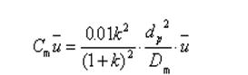
所以应采用的固定相颗粒细且大小均匀，采用分子量较小的物质作流动相，并且适当降 低流动相线速度，从而使传质阻力减小，提高柱效。
66. 10 分 (4733)
（1）容量因子：k＝ms/mm
（2）滞留因子：
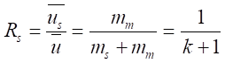
（3）
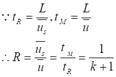
（4）tR＝tM(t+1)
其中：（1）ms, mm分别为组分在固定相(s), 流动相(m)中的质量；（2） 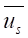 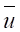
67. 5 分 (4734)
应从速率理论方程来分析。对HPLC，此方程可简化为：
关键是将H变小，而H变小关键是使dp变小，df变小。因此采用3～5mm 固定相 颗粒，且键合相层薄，因此df就小，由于H很小，n很多，R大改进，实现了高效。在分离良好的基础上，才可提高流动相线速，节省了分析时间，从而实现了高速分离。
68. 5 分 (4735)
脱气就是驱除溶解在溶剂中的气体。（1）脱气是为了防止流动相从高压柱内流出时， 释放出气泡。这些气泡进入检测器后会使噪声剧增，甚至不能正常检测。（2）溶解氧会与某些流动相与固定相作用，破坏它们的正常功能。对水及极性溶剂的脱气尤为重要，因为氧在其中的溶解度较大。
69. 5 分 (4736)
可以作流动相的溶剂是：正己烷、氯仿、水、甲醇。其中以正己烷和水为最佳，因为它 们的截止波长最远离254nm，本底吸收最小，粘度较低。在反相色谱中，应选水及甲醇。
70. 5 分 (4737)
（1）流动相主要为水－甲醇或水－乙腈体系。纯水易得廉价。
（2）水、甲醇或乙腈的紫外吸收截止波长低，本底吸收小。
（3）水中可添加各种电解质，以达到改变 H，离子强度等目的，从而提高选择性， 改进分离。
（4）强极性杂质先流出，减小了在正相色谱中，强极性杂质易污染柱子的情况。
71. 5 分 (4738)
应让微量组分A先出峰，因此B与固定相的作用力应大于A。固定相为十八硅烷基硅胶，流动相为25％甲醇－水，从而使非极性更强的B与固定相的作用力大于A，因此A先 流出色谱柱，B滞后。如果A在大量组分B之后流出，往往被B的峰尾所掩盖。
72. 5 分 (4739)
正相色谱指固定相的极性大于流动相极性的色谱体系，因此应选氰基硅胶作固定相， 1％二氧杂环己烷－己烷作流动相。A后于B出峰。反相色谱法指固定相的极性小于流动相极性的色谱体系，因此应选十八烷基硅胶作固定相，60％甲醇－水作流动相。
B后于A 出峰。
73. 10 分 (4740)
（1）分配系数：K=Cs/Cm ，容量因子：=ms/mm
=CsVs/(CmVm)=KVs/Vm=K/β (β 为相比率)
（2）滞留因子
（3）
（4）tR=tM(k+1), tR=tM(K/β +1)
其中，（1）Cs, Cm, ms, mm分别为组分在固定相(s), 流动相(m)中的浓度与质量；
（2）、为组分、载气的平均线速度；（3）L为柱长，β 为相比率。
74. 10 分 (4741)
优点：（1）被测组分在进入检测器前都转化为同一组分，故不必再求相对定量校正因 子，当各组分的校正因子不易求取时，优越性更突出；（2）CO2峰面积正比于分子中 碳原子数，提高了灵敏度。
缺点：增加一个氧化反应管，柱外效应增加，峰会更展宽。
氧化步骤在柱后，否则各组分都变成CO2，无法分离，成为一个峰流出。应采用碳分子 筛或高分子微球作固定相。采用热导池检测器。
75. 5 分 (4742)
设
则
所以
76. 5 分 (4743)
K的大小决定出峰次序；热导系数的大小决定信号的正负。组分的λ大于载气，则出负
信号；组分与载气的λ相等，则不出峰。分配系数相等，不能分离。因此色谱图为：
77. 5 分 (4744)
在固定液相同，浓度相同的情况下，保留值不同，说明其他操作条件不完全相同。此时 鉴定物质应该用相对保留值进行比较，并以B为标准物：
在第一根柱上： rA，B＝1.75/4.28＝0.409，
同理： rC，B＝1.43，rD，B＝1.69 ， rE，B＝2.12
在第二根柱上： rX，B＝8.98/5.30＝1.69
说明另一组分是D，而不是E。
78. 5 分 (4745)
必须考虑两种力的竞争作用，即蒸气压平衡力和分子间作用力。乙醛虽沸点最低，但不 是先出峰，因为乙醚的乙基对形成氢键有较大的位阻效应，而乙醛易与聚乙二醇－400形成氢键。对醇类同系物，按沸点顺序出峰。由于水的极性最大，沸点最高，因此最后出峰。出峰次序为：乙醚、乙醛、甲醇、乙醇、丙醇和水。
79. 5 分 (4746)
优点：（1）可以采用较大进样量；（2）达到相同分离度所需的理论塔板数下降，即柱长可适当缩短；（3）由于高配比柱的k’ 大，因此有利于气体、低沸点化合物的分离分析；（4）足以把载体表面的活性中心复盖，峰形易对称；（5）制备柱时易得到再现性结果；（6）允许进样量大，有利于微量组分检测。
缺点：（1）传质阻力增加，柱效相对降低；（2）tR=t0(1+k’)，由于k’ 高，分析时间延长，不利于快速分析。
80. 5 分 (4747)
优点：（1）固定膜薄，传质阻力小，柱效高；（2）由于K’ 小，传质阻力小，分析速度快，因为tR=t0(1+k’)；（3）正由于传质阻力小，分析能在较低柱温下进行，因此可供选择的固定液数目多。
缺点：（1）由于k’ 小，允许进样量小，不利于痕量组分的检测；（2）由于k’ 小，达到相同分离度所需的理论塔板数多。
81. 5 分 (4748)
由于H2的扩散系数（Dm）大于N2的扩散系数，因此在高流速区，流动相传质阻力突 出，采用N2时，柱效低于H2。在低流速区，分子扩散严重，采用N2时柱效高于H2。而
uopt＝（B/C）1/2，采用N2时的uopt小于采用H2时的uopt ，而Hmin＝A＋2(BC)1/2. 其中，A值不变，根据B，C变化可知，用H2时的Hmin大于用N2时的Hmin 。
82. 10 分 (4749)
柱外效应指色谱柱以外的某些因素，使组分谱带额外展宽而降低柱效率，此现象称为柱 外效应。抑制办法有：
（1）从仪器本身分析：柱前后连接管道必须很细，很短，气化器与检测器死体积必须 很小，以减小分子扩散引起的谱带展宽；
（2）从操作技术上讲：进样速度必须很快，气化温度必须很高，保证试样瞬间气化， 减小初始带宽；
（3）应采用灵敏的检测器，以减小进样量，从而减小初始带宽。
83. 5 分 (4750)
（1）阴（阳）离子交换剂；
（2）pH和离子强度缓冲水溶液；
（3）阴（阳）离子与离子交换剂的交换能力不同；
（4）电导池；
（5）使具有高背景电导的流动相转化为具有低背景电导的流动相，从而直接检测各种
离子含量。
84. 5 分 (4751)
由于色谱柱以外的因素，造成额外的谱带展宽，使柱的分离效率下降，这种现象称为柱 外效应。造成因素有：
（1）进样分部器：进样器死体积大，进样量大，进样速度慢，气化试样速度慢，从而 使初始带宽增加；
（2）柱前后连接管道死体积大；
（3）检测器死体积大。
85. 5 分 (4752)
气液色谱类似于精馏，但两者有重大差别。精馏中，组分分离建立在纯组分蒸气压的差 别上，但在气-液色谱中，有两种力同时影响组分的分离，即纯组分蒸气压的差别以及组 分与固定液之间的作用力大小。四种作用力大小不同，它们是色散力、诱导力、定向力与氢键力。选择合适固定液，使组分间的作用力有差别，改进分离。因此，气-液色谱具有更高选择性。
86. 5 分 (4753)
影响组分移动速率(r)的公式为：r=u/(1+k’ ) ，而k’=kVs/Vm，u为流动相线速度，k’ 为分配比。由上式知，影响主要因素有：
（1）流动相线速度决定了组分在流动相中的停留时间。
（2）柱温决定了组分分配系数（k）的大小，分配系数大，移动慢。
（3）固定相性质，流动相性质，决定k的大小。
（4）固定相含量(Vs)高组分在其中停留时间长，移动慢。
87. 5 分 (4754)
流出组分的折光率与流动相的折光率不同，使入射光束产生偏转，光束的偏转程度与 流动相和组分的折光率之差呈比例关系。
88. 2 分 (4755)
两个不同碳数（相邻碳数）的正构烷烃；
t’R,n < t’R,x < t’R,n+1
89. 5 分 (4756)
（1）噪声与漂移小，则基线稳定；
（2）线性范围宽，则对微量和常量都可测定；
（3）检测限低，则可以检出痕量物质；
（4）响应时间短，适宜于快速分析，能迅速跟踪信号变化。